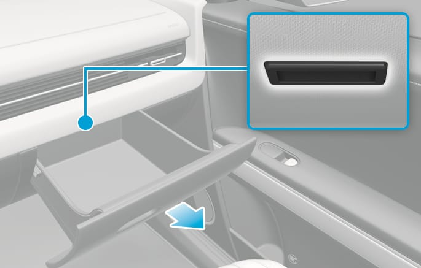

글러브 박스 램프

2C_GloveBoxLamp
글러브 박스를 열면 램프가 켜집니다.
-
글러브 박스가 완전히 닫히지 않으면 약 20분 동안 램프가 켜진 상태로 유지됩니다.
배터리 방전을 예방하려면 글러브 박스를 사용한 후 글러브 박스가 완전히 닫혀 있는지 확인하십시오.

2C_GloveBoxLamp
글러브 박스를 열면 램프가 켜집니다.
글러브 박스가 완전히 닫히지 않으면 약 20분 동안 램프가 켜진 상태로 유지됩니다.
배터리 방전을 예방하려면 글러브 박스를 사용한 후 글러브 박스가 완전히 닫혀 있는지 확인하십시오.